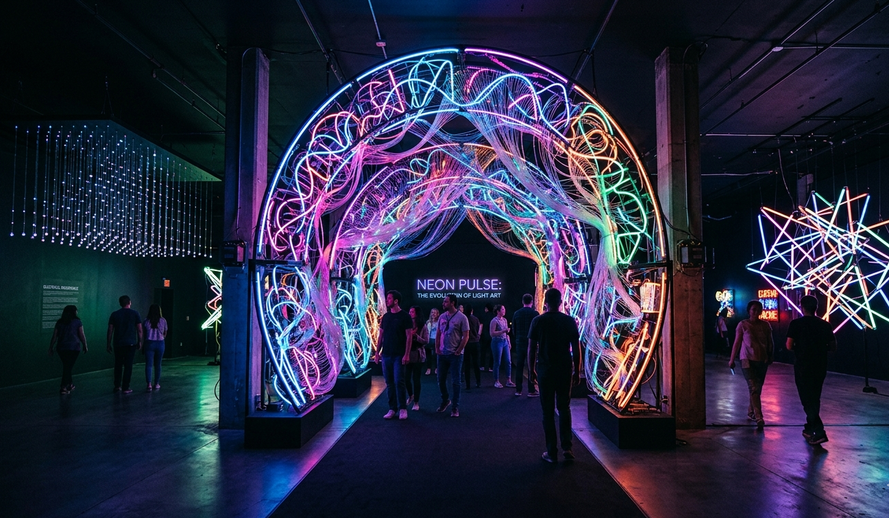
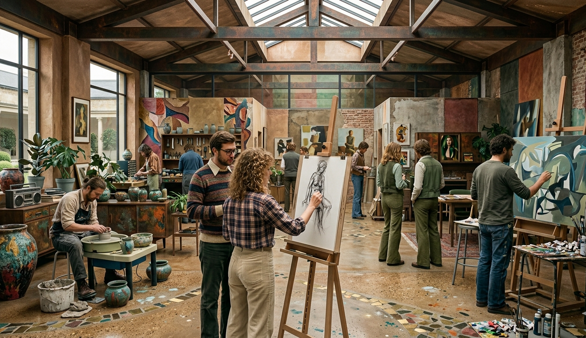

Exhibitions

Exhibition 1: Neon Pulse
A deep dive into the evolution of light art, featuring large-scale installations that use gas-discharge lamps and fiber optics. This collection tracks how artists have used electricity to redefine physical space, turning cold glass and wire into vibrant, glowing landscapes that react to the presence of the viewer.

Exhibition 2: The Living Studio
An open-concept gallery that functions as a workspace for resident artists. Visitors can watch the raw process of creation unfold in real-time, from the first sketch to the finished piece. It’s an unpolished, behind-the-scenes look at the trial and error involved in modern craftsmanship, featuring rotating workshops and live demonstrations.